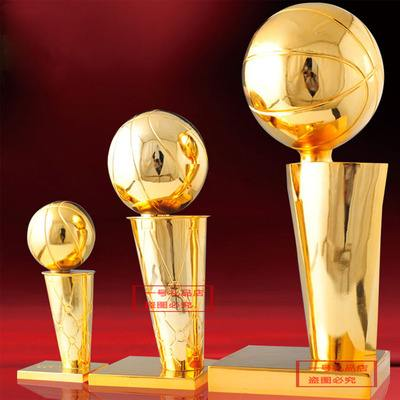

experience

first
1999-2000赛季
科比由于在季前赛对阵华盛顿奇才队的比赛中伤到右手，不得不在观众席上待了6周时间。回到赛场后科比场均可以出场超过38分钟，赛季各项技术统计都有所提高。其中场均助攻数与抢断数均为球队第一。

second
2000-2001赛季
在数据统计方面科比的数据与前一赛季十分相似，除了场均得分高出了6分（28.5分）。但也就是这一年科比和奥尼尔的矛盾开始显现。场均5次助攻再次领先全队。

thirdly
2001-2002赛季
科比生涯第一次出场达到了80场。他继续着全面的表现，场均贡献25.2分，5.5个篮板和5.5次助攻。科比的投篮命中率也达到了职业生涯新高的46.9%，并且助攻数再一次领先全队

fourth
2008-2009赛季
成为继迈克尔·乔丹之后第二位在总决赛系列赛中拿到场均30分，5个篮板，5次助攻并最终赢得总冠军的球员,获得第四个NBA总冠军的同时第一次获得了NBA总决赛最有价值球员奖

fifth
2009-2010赛季
科比拿到了自己的第5个总冠军，并且蝉联了总决赛MVP奖杯。 这是湖人队第一次在NBA7场总决赛系列赛中击败凯尔特人队。科比说这是他5个冠军中最满意的一个冠军。